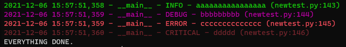

python进阶使用
自大四上学期使用python炼丹开始计算，笔者使用python已经两年了。目前自以为对python的使用十分纯熟，但在阅读他们代码时，仍然发现很多地方是自己从未用过的，因而总结如下，作为针对笔者自己的进阶指南。希望能够通过这种方式对python本身和其标准库的使用更进一层楼。
1. python标准库进阶
1.1. 命令行函数: argparse
可以通过传递参数的名字来告诉文件我在传递哪个参数，模拟C程序的命令行效果。示例如下：
## init argparse for better application. # you should finally edit this function for better use def setup_train_args(): parser = argparse.ArgumentParser() ## this line is for logging, please do not delete it. parser.add_argument('--save_log_path', default='./running_results.log', type=str, required=False) ### you can change, comment or delete blew sections. parser.add_argument("--max_seq_length", default=64, type=int, required=False, help="max sequence length") parser.add_argument('--cuda_num', default='6', type=str, required=False) parser.add_argument('--fraction', default='0.5', type=float, required=False) parser.add_argument('--no_cuda', action='store_true') return parser.parse_args() args=setup_train_args()
基本数据类型的使用，基本的参数都在示例之中了。
顺便：不要忘记import argparse。
1.2. 日志：logging相关
logging的功能比print稍微复杂一些，当然好处就是看起来更不错了，同时流输出到文件中也更加稳定，如果忍不住用print，可以 print\=logger.info alias一下。。。当然我目前还是很喜欢print来debug。
我自己写了一个万能logging配置，如下：
global logger ## config logging formatter. class CustomFormatter(logging.Formatter): grey = "\x1b[0;37m" green = "\x1b[1;32m" yellow = "\x1b[1;33m" red = "\x1b[1;31m" purple = "\x1b[1;35m" blue = "\x1b[1;34m" light_blue = "\x1b[1;36m" reset = "\x1b[0m" blink_red = "\x1b[5m\x1b[1;31m" format = "%(asctime)s - %(name)s - %(levelname)s - %(message)s (%(filename)s:%(lineno)d)" FORMATS = { logging.DEBUG: purple + format + reset, logging.INFO: green + format + reset, logging.WARNING: yellow + format + reset, logging.ERROR: red + format + reset, logging.CRITICAL: blink_red + format + reset } def format(self, record): log_fmt = self.FORMATS.get(record.levelno) formatter = logging.Formatter(log_fmt) return formatter.format(record) ## generate logger def _create_logger(args): logger = logging.getLogger(__name__) logger.setLevel(logging.INFO) # formatter = logging.Formatter( # '%(asctime)s - %(levelname)s - %(message)s') formatter=CustomFormatter() # construct a handle for file logs. file_handler = logging.FileHandler( filename=args.save_log_path) file_handler.setFormatter(formatter) file_handler.setLevel(logging.INFO) logger.addHandler(file_handler) # construct a handle for console logs. console = logging.StreamHandler() console.setLevel(logging.DEBUG) console.setFormatter(formatter) logger.addHandler(console) return logger ## main function def main(): args=setup_train_args() logger=_create_logger(args) logger.setLevel(logging.DEBUG) logger.info("aaaaaaaaaaaaaaaa") logger.debug("bbbbbbbbb") logger.error("cccccccccccccc") logger.critical("ddddd")
以上配置基本就是debug的使用使用的，它会把logging的结果调成不同的颜色，比如info是绿色，error是红色等等，还会提供诸如触发未知的行号等等额外信息。具体效果如下图所示：

顺便：不要忘记import logging。
1.3. 规范参数类型：typing
python身为动态语言，对类型的要求不是很高。但是，如果试图撰写清晰的、标准的代码，如写一个库，那么对参数类型的刻画是十分必要的。可以通过标准库typing进行解决。
比如以下示例：
from typing import Any, Dict, List, Optional, Tuple, Union, overload def prepare_for_tokenization(text: str, is_split_into_words: bool = False, **kwargs) -> Tuple[str, Dict[str, Any]]: blablabla...
我们从中可以清晰地理解其输入参数的类型和返回值是什么。下表总结了一些常用的类型。
| 类型 | 介绍 |
|---|---|
| Dict | Dict[KeyType,ValueType] |
| List | List[ElementType] |
| Optional | Optional[] |
| Any | any type |
| Tuple | Tuple[int,float,str] |
| Union | Union[A,B],二者之一均可 |
| Optional | Optional[X]即Union[X,None] |
如果我想了解更多，我会去这里进行阅读。
1.4. collections：常见的特殊数据结构
大家已经对dict,list,set,tuple这些东西习以为常了，还有一些稍微高阶的结构，记录如下。
1.4.1. Counter
Counter就是计数器，用以统计频率。其输入是一个迭代器对象（如一个列表），输出是一个字典，该字典的key就是迭代器里的值，该字典的value就是该值出现的频率。
from collections import Counter a=[1,1,1,2,2,2,3,3,1,1,2,4,5,6,7,7,7,7,7,7,7,7,7] b=Counter(a) print(f"a: {a}\nb: {b}\n") return (f"b: {b}\n")
难道是有序列的吗？！
1.4.2. defaultdict
defualtdict与dict的不同在于，defaultDict对于一个未收录的key，会自动根据初始化defaultDict的函数来初始化这个key的value。如：
from collections import defaultdict a=defaultdict(list) a["test"].append("test result") return a
1.4.3. OrderedDict
OrderedDict与dict的不同在于：它的key-value排列顺序是固定的。比如在我读取一个json文件时，可能就需要约束OrderedDict的形式：
import json from collections import OrderedDict filename="blablabla" with open(filename,"r") as f: data=json.load(f, object_pairs_hook=OrderedDict)
如果我想了解更多，我会选择阅读这个链接。
1.5. 我真的理解了正则匹配嘛？re
正则表达式匹配是一个大坑，我曾经在读书馆看到一本厚厚的书，就在讲这一件事。所以此处仅仅是简单描绘一下我所遇到的场景。后续可能会补充。
我理解正则表达式：先写出一个pattern，然后用这个pattern去做过滤。
先来几个pattern尝尝咸淡。
p1=r"(" + r"|".join(escaped_special_toks) + r")|" + r"(.+?)"
这个pattern的意思时这样的，实现，对于一个列表escaped_special_toks，我用“|”把里面的元素拼接在一起（如“a|b|c”），之后，添加上括号和后面的部分。因此，这里面涉及到几种re符号，|，（），.+?。
下面一个表格是简单的介绍。
| 符号 | 含义 |
|---|---|
| . | 匹配任意一个非换行字符 |
| + | 匹配前一个字符的任意多字符 |
| ？ | 前一个字符匹配0次也可以被接受 |
| \* | 匹配前面的0个，1个，无穷多字符 |
| 竖线 | 或运算，无需多提及 |
| {a,b} | 对前述内容最少a次最多b次匹配，ab为数字 |
| [] | 只要满足中括号中的一个即可 |
| () | 括号用以捕获()所匹配到的内容，以进行进一步的处理 |
依照以上知识可以知道，原来p1可以实现：1. 要么进行左侧的匹配，要么进行右侧的匹配。2. 左侧的匹配是：查看字符串是否不好escaped_special_toks里的任何一个元素，如果包含，那么返回该元素；2. 右侧的匹配是：如果左侧匹配失败，那么我把所有内容完全返回。
是不是这个样子？
下面介绍几个re的api。
| compile | 编译正则表达式为re对象 |
| search | 返回一个候选 |
| findall | 返回多个候选 |
| sub（pattern,input, need_replaced） | 对于input中符合pattern的用need_repalced替换 |
这篇博客对re模块进行了更为细致的介绍，且文理较为清晰，可供一读。
2. python特殊用法
2.1. f-string: 格式化字符串
之前一直用 format 函数来格式化字符串，后来发现下面的两种形式是等效的。
result=12.5 print("result: {}".format(result)) print(f"result: {result}")
2.2. \*args与\**kwargs
对于函数而言，我可能不知道我能接受的参数有多长，甚至不知道他们都是啥。这时候就可以用上述两个关键字。对于函数而言，
- \*args是一个固定长度但长度未知的参数列表。
\**kwargs是一个固定长度但长度未知的字典，字典的key就是参数名，value是参数的值。
如下面的例子
def fourPrint(first,*args): print(f"first: {first}") for i in args: print(f"and: {i}") return args[0] return fourPrint(0,1,2,3)
def fourPrint(first,**kwargs): print(f"first: {first}") for key in kwargs: print(f"and: {kwargs[key]}") return kwargs[key],key return fourPrint(first=0,second=1,third=2,fourth=3)
还有一种情况，也可以使用这个trick。如下面的例子：
mytupe=(1,2,3,4) mydict={"first":1,"second":2,"third":3,"fourth":4} def fourPrint(first,second,third,fourth): print(f"first: {first}") return fourth return (fourPrint(*mytupe),fourPrint(**mydict))
后续待整理……